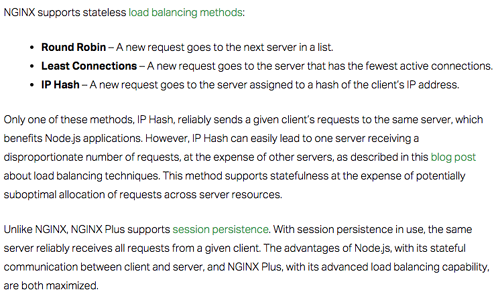

A "stateless Node" application usually means that a Node.js server does not store session or user-specific state in its own memory between requests. Each request can be handled independently.
"Stateless" does not mean:It means:
- no database
- no persistence
- no sessions at all
Stateless Node apps work very well with:
- The application server itself does not rely on local memory to continue user interactions.
Because any server can answer any request, you can easily run:
- NGINX load balancing
- cloud hosting
- Docker containers
- Kubernetes
- horizontal scaling
- 1 server today
- 10 servers tomorrow

Callbacks that write should write just one field, not lock a whole collection. Nested callbacks (Christmas trees) should only contain one write and the end of callback tree. This way the only error that can occur is if the write fails -- everything else is a read.
Node.js allows you to build the fastest websites. If designed correctly, they can be scaled to basically any size. It takes a while to get good with asynchronous programming, but once you get it then you're set. Write locks should be the only locks, like DEC's RMS system. All other calls should be "stackable" whereby they are pushed on the call stack for retrieval when their times comes up. If there are too many calls building up, then stateless node allows you to shard across servers, supported by distributed Mongo databases. This gives you the fastest websites. You don't need AWS. Do it yourself on "raw" server sites like Linode.
Note: A blocking write stops the execution of JavaScript on the main event loop until the write completes. You can also use the non-blocking version whereby node submits the write operation to the OS/libuv thread pool and immediately returns to the event loop, but you risk data being in an undefined state, which can cause any number of subtle and difficult problems on a busy web server. It's best to fire up additional node instances to prevent delays for users, which can be done on either the same server of across multiple servers that are all accessing the same database. See Mongodb topic. It's important to note that even with a blocking write, completion usually means the data has been handed off to the operating system. It does not necessarily mean the bytes have been physically flushed to disk media. If you need durability guarantees (for example, a database transaction log), you typically need an fsync() or equivalent operation after the write. Multiple node instances of your AI application running on the same or multiple servers that share access to the database and recorded all operations in a transaction log are the absolutely best way of building out your AI.
You will also need to decide whether you want to use traditional node callbacks, promises, or async/await. These days most programmers use promises, but there are a variety of considerations to look at when deciding. I still prefer traditional callbacks even though your code looks like it is filled with "Christmas trees."